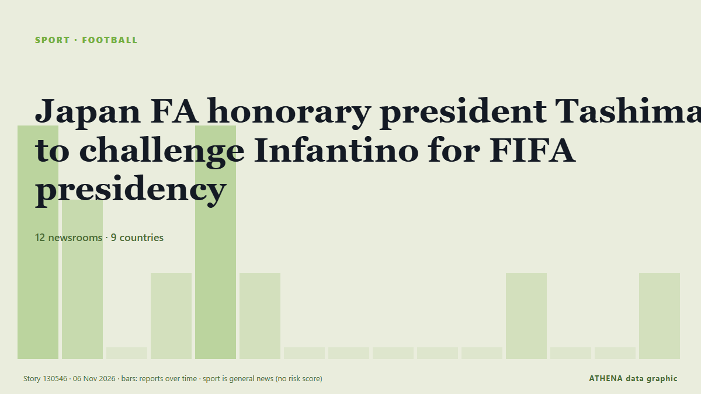

Fútbol
PatrocinadoPresentado por  Cybernetics and Artificial Intelligence Lab Welcome to the Cybernetics and Artificial Intelligence Laboratory, established at the Department of Business Administration of the National and Kapodistrian University of Athens. The lab is headed by Professor Dimitrios Thomakos. The lab aims to do research that can be published in top venues. Our research uses tools and methods of Artificial Intelligence, and lies in the following areas: - Forecasting - Decision making - Cyber security - Finance We are always looking forward to collaborating with exceptional students!
Cybernetics and Artificial Intelligence Lab Welcome to the Cybernetics and Artificial Intelligence Laboratory, established at the Department of Business Administration of the National and Kapodistrian University of Athens. The lab is headed by Professor Dimitrios Thomakos. The lab aims to do research that can be published in top venues. Our research uses tools and methods of Artificial Intelligence, and lies in the following areas: - Forecasting - Decision making - Cyber security - Finance We are always looking forward to collaborating with exceptional students!
| 24 oct | 0 |
|---|---|
| 25 oct | 0 |
| 26 oct | 0 |
| 27 oct | 1 |
| 28 oct | 0 |
| 29 oct | 1 |
| 30 oct | 0 |
| 31 oct | 0 |
| 1 nov | 0 |
| 2 nov | 10 |
| 3 nov | 3 |
| 4 nov | 5 |
| 5 nov | 3 |
| 6 nov | 0 |
Los titulares se muestran en inglés, tal como se publicaron.

Japan FA honorary president Tashima to challenge Infantino for FIFA presidency
Tashima says he brings ‘honest, sound, upright attitude’ He is understood to have acted with the blessing of Uefa The Japan Football Association’s honorary president, Kozo Tashima, has announced his… de Guardian Business
Ballon d'Or winner Kane signs Bayern extension until 2029
Bayern Munich striker Harry Kane has beaten Barcelona youngster Lamine Yamal and Real Madrid forward Kylian Mbappé to emerge as the best player of the 2025-2026 season in Spanish newspaper Marca's… de Vanguard
Mass brawl sparks record 53 red cards in Brazilian under-20s match
The referee sent off 43 players, eight coaching staff and two board members after goal celebrations and taunting descended into complete chaos. de Free Malaysia Today
Spain’s coach among mourners bidding farewell to De Miguel
Jesus De Miguel, 30, died following a collision with Andorra goalkeeper Jesus Owono during a second-division match on Monday. de Free Malaysia Today
Ballon d’Or winner Harry Kane signs contract extension at Bayern Munich until 2029
The England captain is nearing the end of the four-year contract he agreed after leaving Tottenham in summer 2023. de The Irish News (Belfast)
Tributes pour in for Tenerife striker Jesus de Miguel as Raphinha sends “message of strength” to family
Gunners paid their respects at their training ground hours after Spaniard’s tragic death. de Evening Standard (London)
Nadal set to join Real Madrid board of directors
Tennis great Rafael Nadal is set to join the board of Spanish football giants Real Madrid. de BBC News
Como equal Champions League record with stunning 9-1 win at Lens
Como stormed into the Champions League record books with a stunning 9-1 demolition of Lens on Wednesday, equalling the biggest victory in the competition’s history. de Cyprus Mail
West Ham name Scott Parker head coach
LONDON: West Ham announced on Tuesday that they had sacked head coach Nuno Esprito Santo after a disappointing start to the Championship season. de New Straits Times
Arsenal injury update: Ezri Konsa, William Saliba, Bukayo Saka latest return dates
William Saliba’s return to fitness may have come at the perfect time for Arsenal. de Evening Standard (London)
Valverde late strike seals Real Madrid 3-2 win at AEK
Real Madrid came from behind to beat AEK Athens 3-2 in the Champions League on Wednesday, with Federico Valverde scoring in stoppage time to complete a late victory. de Cyprus Mail
Fenerbahce 3 Liverpool 2 LIVE - Andoni Iraola and Kostas Tsimikas react as Reds suffer first Champions League loss
Live coverage of Liverpool's Champions League clash against Fenerbahce at the Chobani Stadium as they look to make it four league phase wins from four. de Liverpool Echo
Erling Haaland is Manchester City’s hero again in entertaining win in Leipzig
Haaland scored his 14th goal of the season to down RB Leipzig. de The Irish News (Belfast)
Bayern skeleton crew sink Atletico in Champions League
MADRID: Bayern Munich overcame a horror list of absences to cruise to a 2-0 win away at Atletico Madrid in the Champions League on Tuesday. de Arab News
PSG breaks Champions League record with four goals against Villarreal
French giants Paris Saint-Germain (PSG) have set a new UEFA Champions League record after scoring four goals in just 17 minutes during their away match against Spanish side Villarreal in the… de AzerNews
Palace lose appeal against Mateta red card
Palace striker was sent off during the defeat to Spurs. de Evening Standard (London)
FIFA’s Infantino ineligible for re-election, says former governance chief
Miguel Maduro insists Gianni Infantino cannot serve more than three terms, pointing to FIFA's statutes. de Al Jazeera English
Asian Cup in Saudi Arabia to be postponed
Saudi Arabia, which will host the FIFA World Cup in 2034, will have an opportunity to use the 2027 Asian Cup as a dress rehearsal for the World Cup. de Sportstar
Barcelona 3-0 Aston Villa highlights and ratings after Champions League defeat
BirminghamLive brings you coverage of Aston Villa's Champions League clash against Barcelona. de Birmingham Mail